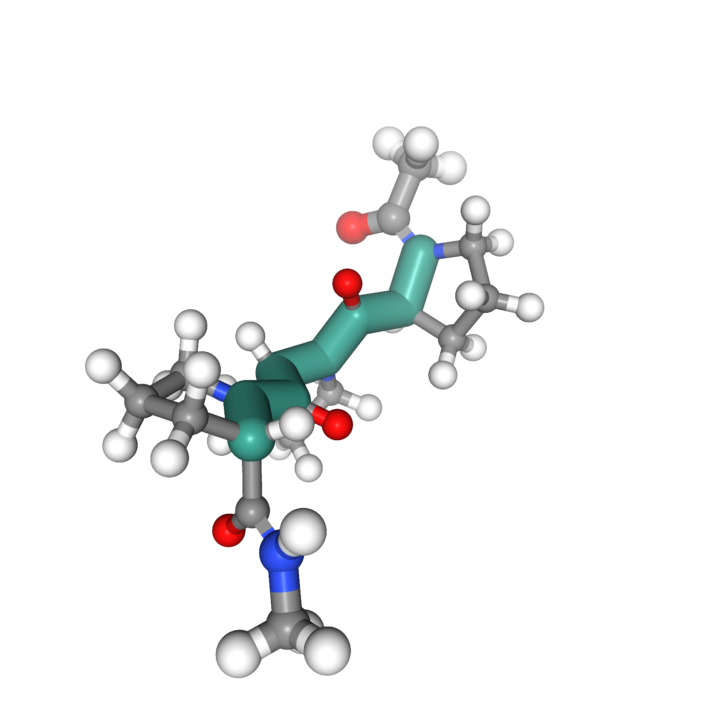
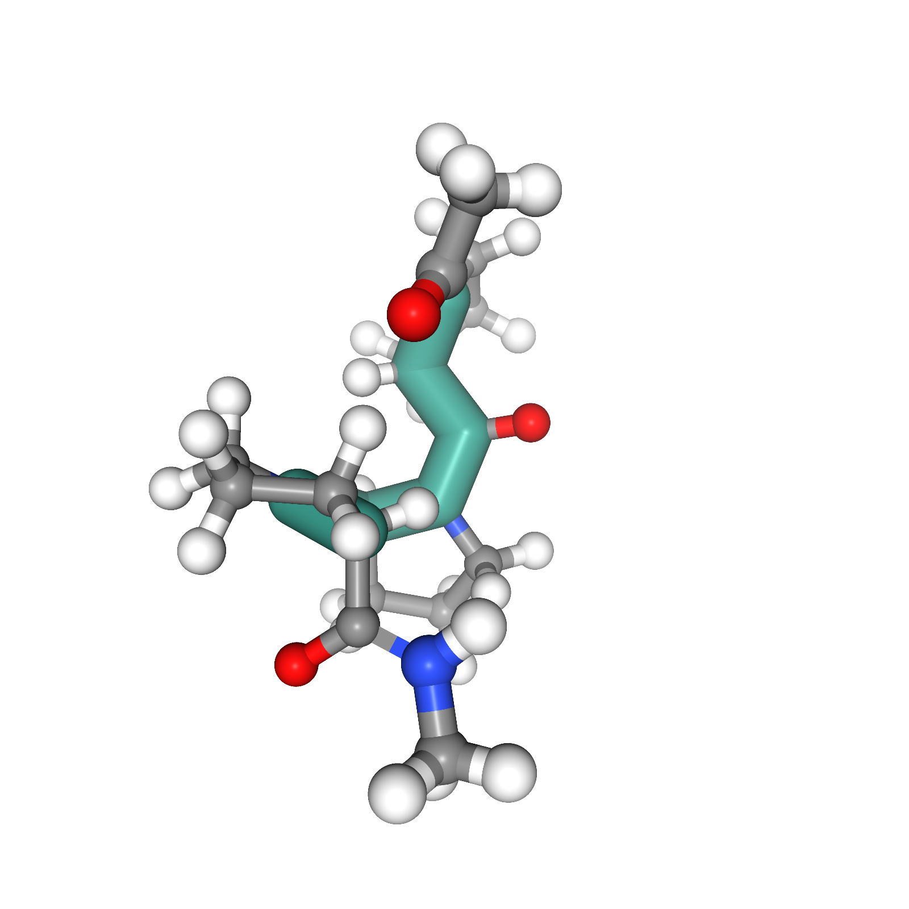

Left-handed (PP-II)

Isomerization

Right-handed (PP-I)
Understanding transition paths between meta-stable states in molecular systems is fundamental for material design and drug discovery. However, sampling these paths via unbiased molecular dynamics simulations is computationally prohibitive due to the high energy barriers between the meta-stable states. Recent machine learning approaches are often restricted to simple systems or rely on collective variables (CVs) extracted from expensive domain knowledge. In this work, we propose to leverage generative flow networks (GFlowNets) to sample transition paths without relying on CVs. We reformulate the problem as amortized energy-based sampling over transition paths and train a neural bias potential by minimizing the squared log-ratio between the target distribution and the generator, derived from the flow matching objective of GFlowNets. Our evaluation on three proteins (Alanine Dipeptide, Polyproline Helix, and Chignolin) demonstrates that our approach, called TPS-GFN, generates more realistic and diverse transition paths than the previous CV-free machine learning approach.
We visualize 3D views of start state, transition path, and target state. systems.
C5
Conformation Change
C7ax
Left-handed (PP-II)
Isomerization
Right-handed (PP-I)
Unfolded
Folding Process
Folded
@article{seong2024collective,
title={Collective Variable Free Transition Path Sampling with Generative Flow Network},
author={Seong, Kiyoung and Park, Seonghyun and Kim, Seonghwan and Kim, Woo Youn and Ahn, Sungsoo},
journal={arXiv preprint arXiv:2405.19961},
year={2024}
}